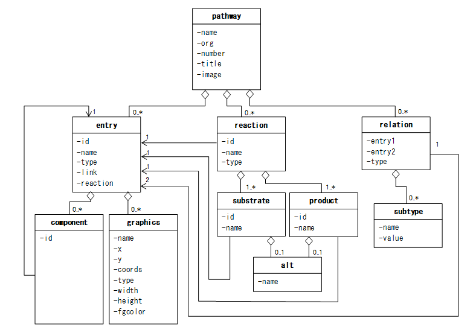
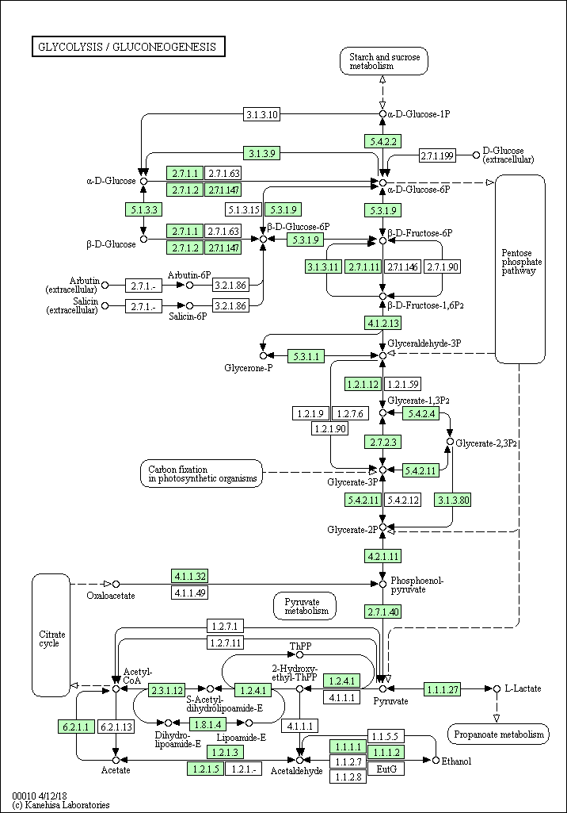

KEGG pathway的数据是使用KGML(KEGG Markup Language)格式存储下来的.详细的信息可以阅读官方文档.
https://www.kegg.jp/kegg/xml/docs/
KEGG pathway有两个类型.
reference pathways: 手动画的.
organism-specific pathways: 使用计算方法自动从reference pathway得到的.
在KGML文件中,entry指的是node,而relation和reaction指的是整个网络的边.在KEGG pathway中,矩形表示基因(也可以认为是gene的产物蛋白质),而circle代表的是metabolite.
如果网络中只有entry和relation,则该网络称为protein network.如果只有entry和reaction,则称为chemical network.
所以一般来说,可以用两种方式来表示metabolic pathway:
metabolic pathways viewed as both protein networks and chemical networks and
regulatory pathways viewed as protein networks only.
KGML的overview
这幅图是整个KGML的总览.
KGML文件使用R包KEGGlincs可以下载pathway的KGML文件.
library(tidyverse)
library(KEGGREST)
library(KEGGlincs)
###
#获得所有has的pathway ID
path_id <- KEGGREST::keggList(database = "pathway",
organism = "hsa")
head(path_id)## path:hsa00010
## "Glycolysis / Gluconeogenesis - Homo sapiens (human)"
## path:hsa00020
## "Citrate cycle (TCA cycle) - Homo sapiens (human)"
## path:hsa00030
## "Pentose phosphate pathway - Homo sapiens (human)"
## path:hsa00040
## "Pentose and glucuronate interconversions - Homo sapiens (human)"
## path:hsa00051
## "Fructose and mannose metabolism - Homo sapiens (human)"
## path:hsa00052
## "Galactose metabolism - Homo sapiens (human)"path_id <-
path_id %>%
names() %>%
unique() %>%
stringr::str_replace("path:", "")
head(path_id)## [1] "hsa00010" "hsa00020" "hsa00030" "hsa00040" "hsa00051" "hsa00052"##下载kgml文件并进行解析
temp_kgml <-
KEGGlincs::get_KGML(pathwayid = path_id[1])
class(temp_kgml)## [1] "KEGGPathway"
## attr(,"package")
## [1] "KEGGgraph"temp_kgml## KEGG Pathway
## [ Title ]: Glycolysis / Gluconeogenesis
## [ Name ]: path:hsa00010
## [ Organism ]: hsa
## [ Number ] :00010
## [ Image ] :http://www.kegg.jp/kegg/pathway/hsa/hsa00010.png
## [ Link ] :http://www.kegg.jp/kegg-bin/show_pathway?hsa00010
## ------------------------------------------------------------
## Statistics:
## 100 node(s)
## 89 edge(s)
## 35 reaction(s)
## ------------------------------------------------------------get_KGML()函数其实分别使用了KEGGREST包中的keggGet()函数来下载的,然后使用KEGGgraph包中的paraseKGML()函数来解析.
temp_kgml2 <-
KEGGREST::keggGet(dbentries = path_id[1], option = "kgml")## No encoding supplied: defaulting to UTF-8.class(temp_kgml2)## [1] "character"temp_kgml2 <-
KEGGgraph::parseKGML(file = temp_kgml2)
temp_kgml2## KEGG Pathway
## [ Title ]: Glycolysis / Gluconeogenesis
## [ Name ]: path:hsa00010
## [ Organism ]: hsa
## [ Number ] :00010
## [ Image ] :http://www.kegg.jp/kegg/pathway/hsa/hsa00010.png
## [ Link ] :http://www.kegg.jp/kegg-bin/show_pathway?hsa00010
## ------------------------------------------------------------
## Statistics:
## 100 node(s)
## 89 edge(s)
## 35 reaction(s)
## ------------------------------------------------------------一共有六个属性.
| Attribute.name | Explanation |
|---|---|
| name | Pathway ID |
| org | ko/ec/org ID |
| number | pathway ID numebr |
| title | pathway title |
| image | pathway figure link |
| link | pathway link |
我们可以下载pathway的图片.
image_link <- slot(slot(temp_kgml, "pathwayInfo"), "image")
image_link## [1] "http://www.kegg.jp/kegg/pathway/hsa/hsa00010.png"download.file(url = image_link,
destfile = basename(image_link),
mode = "wb")
包括了网络中的node的属性.属性包括以下内容.
| Attribute.name | Explanation |
|---|---|
| id | ID of the entry |
| name | KEGG ID of the entry |
| type | Type of the entry |
| link | Link of the entry |
| reaction | The KEGG ID of corresponding reaction |
#整体信息
temp_kgml@pathwayInfo## [ Title ]: Glycolysis / Gluconeogenesis
## [ Name ]: path:hsa00010
## [ Organism ]: hsa
## [ Number ] :00010
## [ Image ] :http://www.kegg.jp/kegg/pathway/hsa/hsa00010.png
## [ Link ] :http://www.kegg.jp/kegg-bin/show_pathway?hsa00010#分别的属性
temp_kgml@pathwayInfo@name## [1] "path:hsa00010"temp_kgml@pathwayInfo@org## [1] "hsa"temp_kgml@pathwayInfo@number## [1] "00010"temp_kgml@pathwayInfo@title## [1] "Glycolysis / Gluconeogenesis"temp_kgml@pathwayInfo@image## [1] "http://www.kegg.jp/kegg/pathway/hsa/hsa00010.png"temp_kgml@pathwayInfo@link## [1] "http://www.kegg.jp/kegg-bin/show_pathway?hsa00010"图片下载链接:
pathway详细信息链接:
我们下面看看pathwa中node的信息.
temp_kgml## KEGG Pathway
## [ Title ]: Glycolysis / Gluconeogenesis
## [ Name ]: path:hsa00010
## [ Organism ]: hsa
## [ Number ] :00010
## [ Image ] :http://www.kegg.jp/kegg/pathway/hsa/hsa00010.png
## [ Link ] :http://www.kegg.jp/kegg-bin/show_pathway?hsa00010
## ------------------------------------------------------------
## Statistics:
## 100 node(s)
## 89 edge(s)
## 35 reaction(s)
## ------------------------------------------------------------可以看到这个pathway含有node,edge还有reaction.
# node
temp_kgml@nodes$`18`## KEGG Node (Entry '18'):
## ------------------------------------------------------------
## [ displayName ]: ALDOA, ALDA, GSD12, HEL-S-87p...
## [ Name ]: hsa:226,hsa:229,hsa:230
## [ Type ]: gene
## [ Link ]: http://www.kegg.jp/dbget-bin/www_bget?hsa:226+hsa:229+hsa:230
## ------------------------------------------------------------#edge
temp_kgml@edges[[1]]## KEGG Edge (Type: ECrel):
## ------------------------------------------------------------
## [ Entry 1 ID ]: 73
## [ Entry 2 ID ]: 75
## [ Subtype ]:
## [ Subtype name ]: compound
## [ Subtype value ]: 90
## ------------------------------------------------------------#reaction
temp_kgml@reactions[[1]]## KEGG Reaction(rn:R00710)
## ------------------------------------------------------------
## [ Name ]: rn:R00710
## [ Type ]: reversible
## [ Substrate Name ]: cpd:C00084
## [ Product Name ]: cpd:C00033在pathway中,如果一个pathway链接到另外一个pathway,那么pathway也是会被作为一个node展示出来.
| Attribute.name | Explanation |
|---|---|
| ortholog | the node is a KO (ortholog group) |
| enzyme | the node is an enzyme |
| reaction | the node is a reaction |
| gene | the node is a gene product (mostly a protein) |
| group | the node is a complex of gene products (mostly a protein complex) |
| compound | the node is a chemical compound (including a glycan) |
| map | the node is a linked pathway map |
| brite | the node is a linked brite hierarchy |
| other | the node is an unclassified type |
{kind=link}